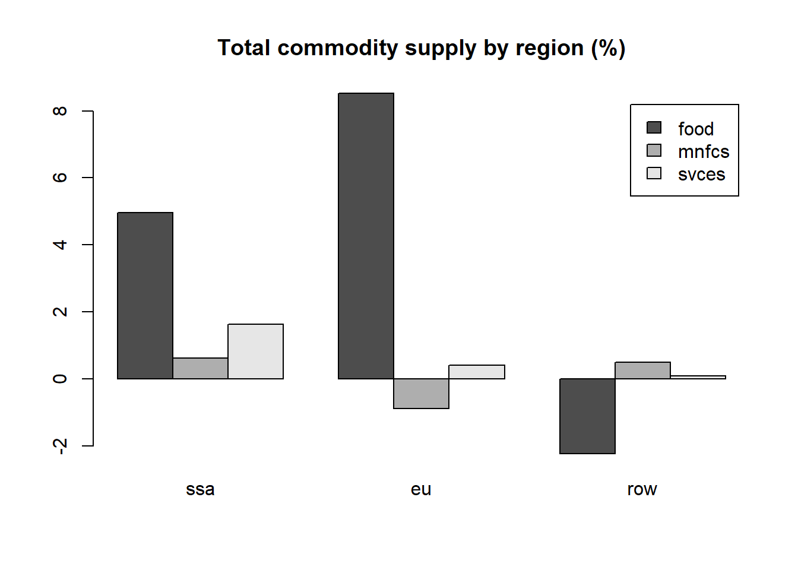

GTAP in R workshop
1 Workshop Overview
This workshop is designed to introduce a couple of tools to work with GTAP models in R. Our session, spanning 120 minutes, will cover a comprehensive range of topics, from the basic installation of the packages to utilizing its features. This workshop is structured to provide a comprehensive overview of the strategies used to interpret and solve the GTAP version 71 model, with a primary focus on practical, hands-on experience. Among the packages used in the workshop is the HARr package, which serves as a bridge between the databases and the R language by reading and writing .har files adopted in the GEMPACK suite. The TabloToR package that runs GTAP simulations as it interprets the model in GEMPACK-style TABLO .tab files and solves it within the R environment2. Other data visualization packages are also used as an example of an application for building automated analysis in R.
| Topic | Duration |
|---|---|
| Workshop Overview | 5 minutes |
| Introduction | 5 minutes |
| A Brief Overview of Data Structures in R | 5 minutes |
| Setting up | 5 minutes |
| Hands-On Session | 30 minutes |
| Q&A and Discussion | 15 minutes |
| Extra contents | - |
2 Introduction
The diagram below illustrates the R package workflow for modeling. It starts with initializing the model, followed by configuring data loading, model translation from TABLO to R, closure setup, and shock application. The process concludes with running the model to obtain results.
flowchart TD
A[Initialize] -->|"tabloToR::GEModel$new()"| B(Model)
G[Load data] --> |"model$loadData()"| B
X['Translate' the model] --> |"model$loadTablo()"| B
H[Setup closure] --> B
Z[Setup shocks] --> B
B --> |"model$solveModel()"| C[Get the results]
3 Setting Up
To run the workshop exercises, you will need to have R installed on your computer. You can download R from the Comprehensive R Archive Network (CRAN). We also highly recommend installing RStudio, a powerful and user-friendly integrated development environment for R. RStudio can be downloaded from the official RStudio website.
Additionally, the TabloToR package is required for the workshop. If it is not already installed on your system, you can install it using the following command in R:
if (!require("devtools", quietly = TRUE)) {
install.packages("devtools")
}
if (!requireNamespace("tabloToR", quietly = TRUE)) {
devtools::install_github('tsimonato/MTED-TabloToR', force = TRUE)
}Set working directory to the workshop folder:
The command below sets the Rstudio working directory to the folder where the .R file you are editing is located (only works if you are using Rstudio):
setwd(dirname(rstudioapi::getActiveDocumentContext()$path))
getwd()When setting the working directory manually in R, remember that R does not accept the single backslash \ in file paths. Instead, you should use either double backslashes \\ or forward slashes /.
setwd("PATH TO WORKSHOP FOLDER HERE")
getwd()[1] "C:/Users/tcsim/OneDrive/purdue_postdoc/projects/workshop_gtapinr"- We will use the
package::function()synthax in the code examples. Therefore,library("package")commands will not be necessary. - Check if your current working directory is correct.
3.1 A Brief Overview of Data Structures in R
R provides several data structures for handling data. Among the most commonly used are Data.frames, Arrays, and Lists. Each structure has its unique features and use cases.
A Data.frame is a table or a two-dimensional array-like structure in which each column contains values of one variable and each row contains one set of values from each column. It’s similar to a spreadsheet or SQL table and is particularly well-suited for data manipulation and analysis tasks.
Example of a Data.frame:
df <- data.frame(
Commodities = c("Wheat", "Corn", "Wheat", "Corn"),
Activities = c("Farming", "Farming", "Harvesting", "Harvesting"),
Margins = c("Low", "High", "Low", "High"),
Values = c(1, 2, 3, 4)
)
df.
Subsetting in a Data.frame can be done to select specific rows, columns, or both:
Here, we select rows where the Values column is greater than 2
df[df$Values > 2, ] Commodities Activities Margins Values
3 Wheat Harvesting Low 3
4 Corn Harvesting High 4Here, we select the ‘Commodities’ column
df$Commodities[1] "Wheat" "Corn" "Wheat" "Corn" Here, we select rows where ‘Values’ is greater than 2 and only the ‘Commodities’ and ‘Activities’ columns
df[df$Values > 2, c("Commodities", "Activities")] Commodities Activities
3 Wheat Harvesting
4 Corn HarvestingAn Array in R is a multi-dimensional data structure that can store data in more than two dimensions. While arrays can have any number of dimensions, a two-dimensional array is known as a matrix. Arrays are useful for performing mathematical operations on multi-dimensional data.
Example of an Array:
# Assuming each combination of categories has a unique value
array_data <- array(df$Values, dim = c(2, 2, 2))
dimnames(array_data) <- list(
unique(df$Commodities),
unique(df$Activities),
unique(df$Margins)
)
array_data, , Low
Farming Harvesting
Wheat 1 3
Corn 2 4
, , High
Farming Harvesting
Wheat 1 3
Corn 2 4# Subsetting data from an Array
array_subset <- array_data["Wheat", "Farming", ]
array_subset Low High
1 1 A List is a collection of elements that can be of different types and structures. You can think of a list as a container that holds a variety of objects, which can be accessed and manipulated individually.
Example of a List:
list_data <- list(
Data_Frame = df,
Array = array_data,
Details = list(
Commodities = unique(df$Commodities),
Activities = unique(df$Activities),
Margins = unique(df$Margins)
)
)
list_data$Data_Frame
Commodities Activities Margins Values
1 Wheat Farming Low 1
2 Corn Farming High 2
3 Wheat Harvesting Low 3
4 Corn Harvesting High 4
$Array
, , Low
Farming Harvesting
Wheat 1 3
Corn 2 4
, , High
Farming Harvesting
Wheat 1 3
Corn 2 4
$Details
$Details$Commodities
[1] "Wheat" "Corn"
$Details$Activities
[1] "Farming" "Harvesting"
$Details$Margins
[1] "Low" "High"You can subset elements of a list using the $. For nested lists, you can chain these operators to access deeper levels.
list_data$Data_Frame Commodities Activities Margins Values
1 Wheat Farming Low 1
2 Corn Farming High 2
3 Wheat Harvesting Low 3
4 Corn Harvesting High 4list_data$Data_Frame$Commodities[1] "Wheat" "Corn" "Wheat" "Corn" list_data$Array["Wheat", "Farming", "Low"][1] 14 Hands-On Session
In this section, our attention will be centered on the steps evolved to run GTAPv7 simulations in R. We will delve into some key tasks: learning how to effectively import and examine .har files in R, interpreting models presented in .tab format within the R environment, executing simulations, and exploring the resulting data.
4.1 Step 1: Set up the GTAP database
GEMPACK utilizes custom .har binary data files. The R package HARr enables R to directly read these .har files, specifically headers with character, integer, and dense real matrices. It converts the data in these headers, including set information, into a list of arrays, in which each array represents an Header of the .har file.
In this step, you’ll write a script to read the GTAP model’s database files and explore specific data within them. After loading the files, extract and examine the header vdfb (Domestic purchases, by firms, at basic prices) from the appropriate file. Explore the structure and contents of this header.
- Load the .har files using the HARr package.
- From the loaded files, extract the header
vmfp(Imported purchases, by firms, at producers prices), then subset acts tofood. - Convert
vmfpto a data.frame class. - Analyze the extracted
vdfbdata. You can make a chart if you want it.
4.1.1 Task 1: Loading the GTAP Database
In this task, you will learn how to load the GTAP model’s database files into R using the HARr package. This step is crucial as it sets the foundation for all subsequent analyses. You’ll focus on how to read .har files and understand their structure within the R environment.
The name of each list must be the same as that specified in the database model, preferably in lowercase. See below that the names in the .tab file and the previously generated lists are the same.
GTAPv7.tab, line 99:
...
File
GTAPSETS # file with set specification #;
File
GTAPDATA # file containing all Base Data #;
File
GTAPPARM # file containing behavioral parameters #;
... Use the HARr package to load the .har files named SETS.HAR, Default.prm, and Basedata.har into R. Store the read files in a list named data, with keys gtapsets, gtapdata, and gtapparm respectively.
Show the code
# You need to get the data files .har
database = list(
gtapsets = HARr::read_har('model\\SETS.HAR'),
gtapdata = HARr::read_har('model\\Basedata.har'),
gtapparm = HARr::read_har('model\\Default.prm')
)Data structure:
classDiagram
class database {
+List of 3 lists
}
class gtapsets {
+List of 10 obj
--------------
+dver: array [1d]
+reg: chr [3]
+comm: chr [3]
+marg: chr
+acts: chr [3]
+endw: chr [5]
+endm: chr [3]
+endf: chr
+ends: chr
+endt: chr [3]
}
class gtapparm {
+List of 17 arrays
--------------
+dver: array [1d]
+subp: array [comm, reg]
+incp: array [comm, reg]
+esbt: array [acts, reg]
+esbc: array [acts, reg]
+esbv: array [acts, reg]
+etre: array [endw, reg]
+etrq: array [acts, reg]
+esbd: array [comm, reg]
+esbm: array [comm, reg]
+esbs: array [marg]
+esbg: array [reg]
+esbi: array [reg]
+esbq: array [comm, reg]
+eflg: array [endw, reg]
+rdlt: array [endw, endwt]
+rflx: array [reg]
}
class gtapdata {
+List of 33 arrays
--------------
+dver: array [1d]
+dpsm: array [reg]
+evfp: array [endw, acts, reg]
+evos: array [endw, acts, reg]
+save: array [reg]
+vosb: array [comm, reg]
+vdep: array [reg]
+vdfp: array [comm, acts, reg]
+vdfb: array [comm, acts, reg]
+vdgp: array [comm, reg]
+vdgb: array [comm, reg]
+vdpp: array [comm, reg]
+vdpb: array [comm, reg]
+vdip: array [comm, reg]
+vdib: array [comm, reg]
+evfb: array [endw, acts, reg]
+vmfp: array [comm, acts, reg]
+vmfb: array [comm, acts, reg]
+vmgp: array [comm, reg]
+vmgb: array [comm, reg]
+vmpp: array [comm, reg]
+vmpb: array [comm, reg]
+vmip: array [comm, reg]
+vmib: array [comm, reg]
+vmsb: array [comm, reg, reg]
+vcif: array [comm, reg, reg]
+vkb: array [reg]
+vst: array [marg, reg]
+vtwr: array [marg, comm, reg, reg]
+vfob: array [comm, reg, reg]
+vxsb: array [comm, reg, reg]
+maks: array [comm, acts, reg]
+makb: array [comm, acts, reg]
}
database --|> gtapsets
database --|> gtapparm
database --|> gtapdata
4.1.2 Task 2: Extracting and Filtering Data
This task involves extracting specific data from the loaded GTAP database, with a focus on the vmfp header. You will learn how to filter this data for particular regions and activities. This exercise will assist you in becoming familiar with the format and structure of the data utilized in these packages.
- Use R’s traditional sublist selector
$to subset lists and [,,] to subset the array in its 3 dimensions. - Note that all characters in the database are in lower case, including the name of the headers.
Extracting the vmfp header:
Show the code
vmfp <- database$gtapdata$vmfp
vmfp, , reg = ssa
acts
comm food mnfcs svces
food 3053.641 847.5477 699.6063
mnfcs 4988.493 21711.2031 13755.7686
svces 1352.623 2573.5461 5244.4595
, , reg = eu
acts
comm food mnfcs svces
food 106757.54 19543.31 21146.19
mnfcs 42000.44 729110.94 210368.31
svces 12873.86 67352.26 198928.09
, , reg = row
acts
comm food mnfcs svces
food 132265.84 38923.74 30186.41
mnfcs 85475.67 1269135.12 430168.25
svces 21010.39 74416.02 211477.12Filtering for food in acts:
To filter an array, it helps to know the number and order of its dimensions, in the case of vmfp: [comm,acts,reg].
Show the code
- 1
- Returns the total number of elements (values) in the array.
- 2
- Returns the dimensions of the array, showing how many elements are in each dimension.
- 3
- Return the names of each dimensions and its elements. It’s useful for understanding what each dimension represents.
[1] 27
[1] 3 3 3
$comm
[1] "food" "mnfcs" "svces"
$acts
[1] "food" "mnfcs" "svces"
$reg
[1] "ssa" "eu" "row"
reg
comm ssa eu row
food 3053.641 106757.54 132265.84
mnfcs 4988.493 42000.44 85475.67
svces 1352.623 12873.86 21010.394.1.3 Task 3: Converting Data for Analysis
Here, you will convert the extracted array data into a data.frame format using base R. This conversion is essential for making the data more accessible and easier to analyze using various R functions and packages like data.table, dplyr and tidyr.
Show the code
vmfp_df <- as.data.frame.table(vmfp)
vmfp_dfArrays converted to data.frame through as.data.frame.table() function have Freq as the name of the column of numerical values. Keep this in mind when using this type of conversion.
4.1.4 Task 4: Exploring the data
There are many options for exploring these databases in R. This can be useful for building a descriptive analysis of the database, identifying patterns, etc.
Perhaps a bar chart using barplot() function would be a good option in this case.
2 dimensions static bar chart example:
Show the code
barplot(
vmfp_food,
legend.text = rownames(vmfp_food),
main= "Imported purchases, by firms, at producers prices (million US$)"
)
4.2 Step 2: Read the model
In this step, we will convert the GTAPv7 model from the TABLO language into a format that R can understand. This is achieved through a process that interprets and translates different components of the model, statements like Read, Set, Coefficient, Variable, Formula, Equation, Parameter, Mapping, etc. Each category of commands is handled in a specific way to ensure they are correctly represented in R.
The correct labeling of each statement into its appropriate group is essential for the subsequent definition and construction of the matrix that will be inverted during the simulation. This precise organization is key to maintaining the integrity of the model’s structure and calculations as it transitions into the R environment.
- Set the path to the model’s TABLO file.
- Initialize a GEMModel object.
- Assign to this object the path to the model.
- Assign the GTAPv7 database to the model.
Show the code
- 1
- The location path for the GTAPv7 model’s TABLO file.
- 2
- Create a new instance of the GEModel class.
- 3
-
This step involves translating the model’s equations, formulas, mappings, and other commands into a syntax understandable by R. The translated model is then stored within the
modelobject, which was initialized in the previous step. - 4
-
Load the
databaseread in the previews step.
4.3 Step 3: Setup the closure and shocks
In this step, we focus on setting up the closure conditions and applying specific shocks to the model. Closure, what can be seen as the decision about which variables are exogenous and which are endogenous, is a critical aspect that determines its operational framework, influencing how the model reaches equilibrium and responds to external changes. It essentially sets the ‘rules of the game’ for the model, defining what is fixed and what is flexible within its economic environment. Once the closure are defined, we define the vectors of shocks, these are changes to the model’s inputs that simulate different scenarios, such as economic or policy changes.
- Defining exogenous variables.
- Setting all exogenous variables to zero.
- Apply an chosk of
5% increase in productivity for thefoodactivity in thessaandeuregions.
4.3.1 Task 1: Identifying Exogenous Variables
In this task, you will create a character vector composed of exogenous variables. These are variables that are determined outside the model and are inputs to the model’s system.
When defining exogenous variables, it’s important to ensure that they align with the variables used in your specific model version (GTAPv7 in this case). This list forms the basis for setting up the model’s initial conditions and applying shocks later.
Show the code
exogenous_variables <- c(
'afall', 'afcom', 'afeall', 'afecom', 'afereg', 'afesec', 'afreg', 'afsec',
'aintall', 'aintreg', 'aintsec', 'ams', 'aoall', 'aoreg', 'aosec', 'atall',
'atd', 'atf', 'atm', 'ats', 'au', 'avaall', 'avareg', 'avasec', 'cgdslack',
'dpgov', 'dppriv', 'dpsave', 'endwslack', 'incomeslack', 'pfactwld', 'pop',
'profitslack', 'psaveslack', 'qe', 'qesf', 'tfd', 'tfe', 'tfm', 'tgd',
'tgm', 'tid', 'tim', 'tinc', 'tm', 'tms', 'to', 'tpdall', 'tpmall', 'tpreg',
'tradslack', 'tx', 'txs'
)4.3.2 Task 2: Initializing Model Variables
Here, you’ll assign the value 0 to each of these variables in model$variableValues. This step is crucial for preparing the model’s baseline before applying any shocks.
Using a for() loop to iterate over the list of exogenous variables is an efficient way to assign values to them.
Show the code
for (var in exogenous_variables) {
model$variableValues[[var]][] <- 0
}4.3.3 Task 3: Applying Shocks to the Model
In this task, you will apply a specific shock to the model. For example, a 5% increase in the total productivity change variable (aoall) for the food activity in the ssa and eu regions.
You can adapt using an similar approach to this previous example: list_data$Array["Wheat", "Farming", "Low"]
Show the code
model$variableValues$aoall["food", c("ssa", "eu")] = 10
model$variableValues$aoall reg
acts ssa eu row
food 10 10 0
mnfcs 0 0 0
svces 0 0 04.4 Run the model
At this stage of the process, we are ready to execute the model, bringing together all the elements we’ve prepared: the input database, closure conditions, and the shocks we’ve defined. This step involves solving the model’s matrix, which is a representation of the equations from the model. The model’s execution not only solves the matrix but also carries out the calculations defined in the model’s formulas. Additionally, for GTAPv7, post-simulation processes are conducted, which involve further calculations based on the model’s output.
Running with 1 iteration and 1 step (Johansen method).
model$solveModel(
iter = 1,
steps = 1
)Running with 3 iteration and multiple steps.
model$solveModel(
iter = 3,
steps = c(1, 3)
)Results for percentage change in total commodity supply by region (qc):
outputData$qc reg
comm ssa eu row
food 4.9577805 8.5266022 -2.23012678
mnfcs 0.6236865 -0.8850531 0.49274290
svces 1.6287317 0.4097268 0.07828056barplot(
outputData$qc,
beside = TRUE,
legend.text = rownames(outputData$qc),
main= "Total commodity supply by region (%)"
)
5 Extra content: Post Sim analisys
6 Q&A and Discussion
- Open floor for questions
- Group discussion on applications